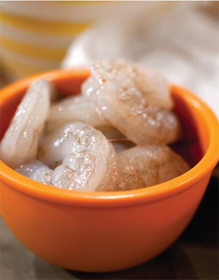

There’s no need for a rigid plan—one that might work for the duration of the diet, but where does it leave you at the end? More often than not, you’re back at square one. The key to Cook Yourself Thin is to change your diet, not go on one, and make a few changes to create a lasting difference.

On-the-Run Eater
|
|
SWAP FOR |
|
Blueberry muffin and a large latte from Starbucks |
Swap for 2 slices of wholegrain toast (keep bread in the freezer for extra convenience) with butter and jelly and coffee with a splash of milk to save a whopping 450 calories. |
|
Early evening fridge raid—two thick slices of white bread and butter That’s nearly 400 calories. |
Swap for your favorite fruit. |
|
Frozen packaged lasagna and salad and a bottle of beer |
Swap for our lasagna, page 110. Make it over the weekend and you can keep it refrigerated for up to three days. Save an average of 200 calories compared to supermarket versions. |
|
Swap the beer for— |
club soda and you’ll save another 100 calories. |
Sugar Fiend
|
|
SWAP FOR |
|
Cereal with whole milk |
Swap for whole grain cereal, half a banana and skim milk, and you won’t need those cookies midmorning. |
|
4 Oreos These really are just an empty sugar hit and 320 calories. |
Swap for a piece of fruit. A handful of cherries is 14 calories, and you’ll get the same sweet hit. |
|
6 cups of coffee with milk and 2 sugars throughout the day These are adding up 300 extra calories per day. |
If you can wean yourself off the sugar, you’ll save 240 calories. |
|
Chicken salad |
Watch out for heavy dressings. |
|
Can of orange soda |
Swap for a diet version. If you just hate diet soda, then grab an orange and save over 100 calories. |
|
Spinach and ricotta ravioli with herby tomato sauce |
Good choice |
|
Store-bought chocolate cheesecake 360 calories |
Swap for slice of Deep Dark Chocolate Cake, page 197. |
Yo-Yo Dieter
|
|
SWAP FOR |
|
Nothing for Breakfast |
This is a bad idea—saving calories first thing usually leads to a need for sugary treats later in the morning |
|
Danish or muffin and a cappuccino mid-morning |
Swap for a bowl of oatmeal with skim milk and a regular coffee to save nearly 300 calories |
|
Chicken Caesar salad |
Swap for our slim version, page 107, and save over 200 calories. |
|
After work—3 glasses of white wine, half a plate of fries, and ketchup |
Not much food for nearly 600 calories. Try alternating a glass of wine with a diet soda or sparkling mineral water and have something to eat before you go out. |
|
Before bed—cheese and crackers Another 540 calories. |
If you know you’re going to get home hungry, keep some 5-minute meals on hand, like miso soup with noodles, or heat up some soup you made over the weekend. |
Comfort Food Craver
|
|
SWAP FOR |
|
BLT with mayo and creamy tomato soup |
Swap for our Turkey BLT and Tomato Fennel Soup, page 173 |
|
Five shortbread cookies These very quickly add up to 335 calories. |
A small bowl of popcorn (no butter or cheese) is only 60 calories—the perfect comfort snack. |
|
Macaroni and cheese can easily contain over 800 calories…gulp! |
See ours, page 167 (517 calories). |